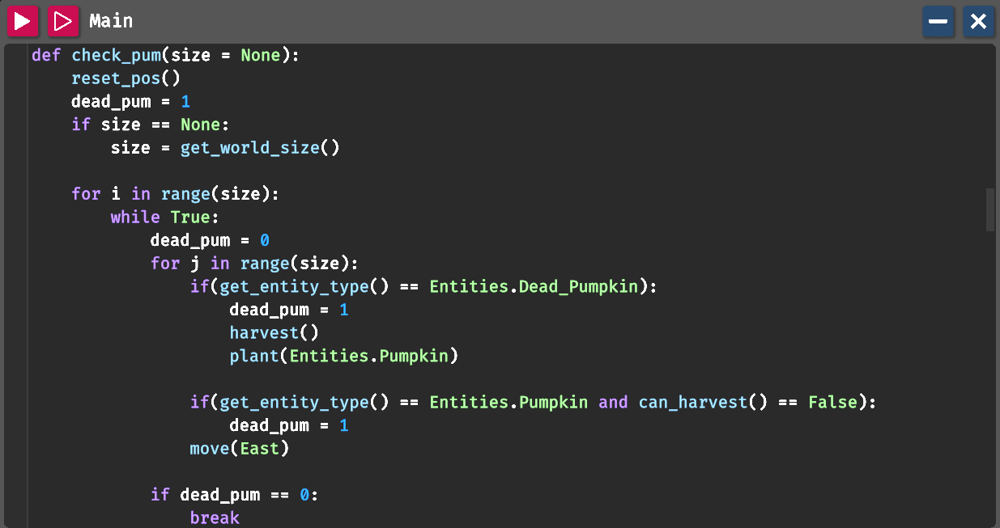

Gameplay
In-Game Coding (currently selected)
In-Game Coding
The game uses a Python-like programming language running on its own interpreter.Python-inspired syntax: The syntax, loops, variables, and structure are very similar to Python, and code is saved in .py-style files that can even be edited in external tools like VS Code
Not full Python: It does not include the standard CPython library or full Python compatibility, meaning not all standard Python code works inside the game.
Even so, as a student who knows something about Python and has played the game, my personal consideration is that it is a great tool for consolidating already existing knowledge of Python.
I think it would be a good tool even for people who never tried coding in their life, but the latters would probably need some external-source help to do the vast majority of the things.
Of course the game is not supposed to be a complete substitution to a professional learning material like a book, but it could be a valid alternative for people approaching to the coding world.
One of its biggest advantages is the ability to visualize the consequences of your code. Since every action is performed by a drone, it becomes much easier to understand what is happening, identify mistakes, and see the practical consequences of coding errors.
Below, an example of some codes:
